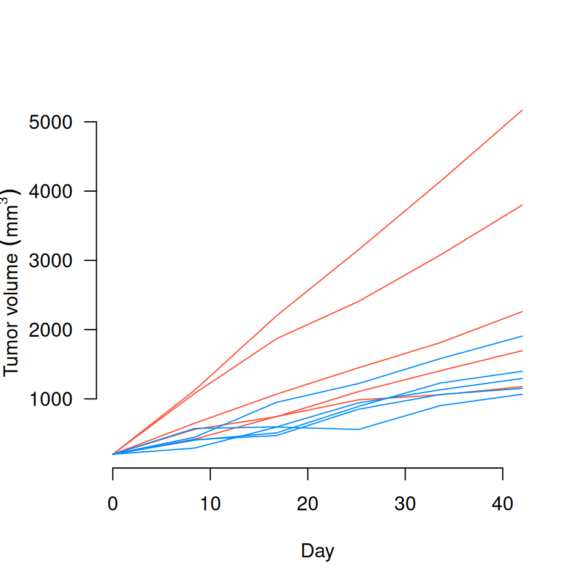

Generate tumor data: Time to reach endpoint
Value
Y Observed measurements
M Idealized 'true' size for each mouse at each time (no error)
B 'True' growth rate for each mouse (in data-generating mechanism)
Examples
Data <- gendat(5, effect_size=2, m=6)
matplot(Data$time, t(Data$Y[,,1]), lty=1, type='l', col='#FF4E37', bty='n', las=1,
ylab=expression("Tumor volume "*(mm^3)), xlab='Day')
matplot(Data$time, t(Data$Y[,,2]), lty=1, type='l', col='#008DFF', add=TRUE)
